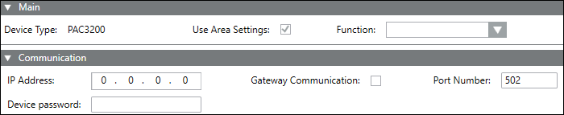
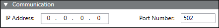
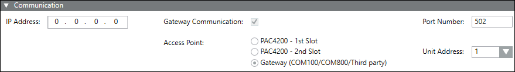

Communication Expander
The fields displayed in the Communication expander vary according to the selected device type.
Power Devices
The displayed fields will vary according to the selected device.
- IP Address: Specify the IP address of the device for communication. When communicating via a gateway, use the IP address of the higher level. When communicating via Modbus TCP, use the IP address of the device.
- Gateway Communication: Select this checkbox to activate gateway communication if the device is connected using Modbus RTU via gateway.
- Port Number: The default value is 502.
NOTE: If a device is connected using the Slot 1 of PAC 4200, use port number as 17002. Similarly if a device is connected using the Slot 2, use 17003. - Access Point: The check box is by default selected setting the Access Point to the Gateway (COM100/COM800/Powercenter 3000/ThirdParty).
- Unit Address: Default value is 1. Denotes Modbus address in the Modbus RTU subnet.
NOTE: The unit address is reset to the next available address if there is any change in IP address under the Communication expander. - Device Password: Password-protected devices can only be synchronized when you enter the correct password.
- User name: Enter the user name.

PQ Devices
- IP Address: Lets you specify the IP address of the device for communication. The value of the IP address has to be between 0.0.0.0 - 255.255.255.255.
- Port Number: Port number of the device. The default value is 502.
NOTE: If a device is connected using the Slot 1 of PAC 4200, use port number as 17002. Similarly if a device is connected using the Slot 2, use 17003.

Breakers
- IP Address: Specify the IP address of the device for communication. When communicating via a gateway, use the IP address of the higher level. When communicating via Modbus TCP, use the IP address of the device.
- Gateway Communication: By default, this check box is selected, setting the Access Point to the Gateway (COM100/COM800/ThirdParty).
- Port Number: The default value is 502.
NOTE: If a device is connected using the Slot 1 of PAC 4200, use port number as 17002. Similarly if a device is connected using the Slot 2, use 17003. - Access Point: The check box is selected by default, setting the Access Point to the Gateway (COM100/COM800/Powercenter 3000/ThirdParty).
- Unit Address: The default value is 1. It denotes Modbus address in the Modbus RTU subnet.
NOTE: The unit address is reset to the next available address if there is any change in IP address under the Communication expander.
